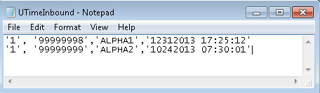
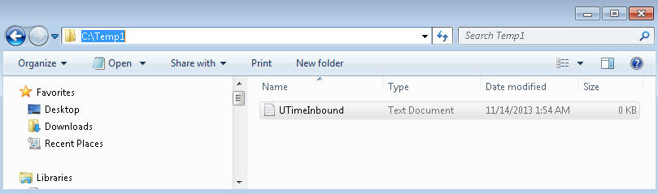
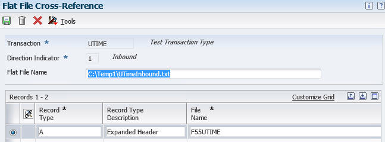

Note:
The first column is entered manually by hand as required by R47002C. For this example, either 1 or A or any value defined in P47002 (See below)
Text qualifier (single quote) is used even for number in the text file (e.g., AN8 in second column with value of 99999998)
The first column is entered manually by hand as required by R47002C. For this example, either 1 or A or any value defined in P47002 (See below)
Text qualifier (single quote) is used even for number in the text file (e.g., AN8 in second column with value of 99999998)


Note: For detail, refer to <Document 1305796.1> E1: 47: Representation of Path for EDI in EnterpriseOne
Now you are ready to run R47002C as described below.

Note:
- Transaction is UTIME (a UDC, add if does not exist)
- Direction Indicator = 1 (Inbound from Text file to Database table)
- Flat File Name = Path with file name and File Extension
- Record Type = A or 1 or any other value (this value is the first columns in your text file)
- File Name = Target table name
- <Internal_Only>If you want to create text file through macro, refer to <Document 1305159.1> E1: 47: Flat File Creation Procedure to Run R47002C - Flat File Conversion (Macro: QuoteCommaExport; Export a Text File with Comma and Quote Delimiters)</Internal_Only>

Note:
- Enter the transaction: transaction UDC used in P47002, R47002C is using this information. In this case UTIME.
- Enter field delimiter: , (comma for this example)
- Enter text qualifier: single quote or double quote matching the actual character used in the text file. R47002C expect all columns to be in string.